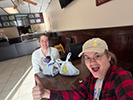
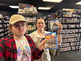
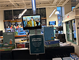
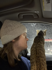

<
Photos of Me (Zug)
Last Updated: 9/10/26

Me smiling next to a human-sized RX-78-2.
![](../blog/blog-media/132/132_37meandtheguywhoproducedsomething_sm.png "The final photo I took at SGDQ2026 — me and the guy I mentioned way way back, the guy I talked about Marathon with, who had been a tour guitar tech for some Millennial/Gen X band. And of COURSE his fucking name badge is cut off. I have another photo where the name badge isn't cut off, but that photo is BLURRY because I have SHAKY HANDS so it's, like, fuck, nightmare! Nightmare! Anyways yeah real cool dude. Listened to some music of his in the degen corner alongside Bonnie and Hayley and Morgan. I ran into him right after midnight and knew I should snap a selfie because I realized I didn't have any photo documentation of myself with him. I'm sooooo fucking shit at memory recall, I knew I'd never be able to remember stuff unless I had photos. But sadly I did not snap his name 😔. Anyways, after this, all I can really remember is that me and Taran did a sweep of the entire arcade (he really enjoyed some like death ball game where you're a wizard who can double jump? Or something?). Then we got breakfast together, but Caribou opened 30 minutes late, so we lazed around in the empty square that just 5.5 days prior had been fucking packed. Then he left real real early. My notes say he talked about Resident Evil and Valkyria Chronicles and Patapon... but not what we did! And then the true morning of the 7th day, like 8am-onwards, I can't remember, I don't really know what else I did, after. I remember Shadow was on the livestream for a, like, donation raffle prize showcase (cuz he makes swords (this time around he made Leon's axe)), not wearing his hat, and I saw his super bald head, and was fucking insane (because he ALWAYS wears his hat!). Then I went and chilled in the music room with Anon Nate Shelljump, but I don't remember what we talked about. I think, just. Similar stuff? I think he mentioned Dan Salvato's new game. Which, by the way, apparently Dan Salvato has been at both SGDQ 2025 and 2026, and literally everyone except me saw him? Or something like that? I have no idea. I've never seen him! And then I went home, around 11am. I had planned to stay later, initially, but. I was just so pooped. I went straight to bed, woke up around 9pm, and. Decided I wasn't gonna go back for the finale, 'cause I was so tired. I watched it on my computer, and. That was the end of SGDQ2026. Overall good (: .")

 that has that, and it was soooo fucking fun and funny. He seemed a little upset but I was having a great time. Then we BOTH played Guitar Hero. It was awesome. Then we watched carlsagan42 showcase his indie game to people — and, like, I had no idea it was literally carlsagan42 until the other guy he was showing it to finished it and the credits said 'by carlsagan42' and I laughed and thought it was a joke for like a second before realizing, shit, it's actually carlsagan42. 'Cause Nate was just calling him 'Carl'! Then Carl and Nate talked about carlsagan42's indie game for quiiiiiite a while, and made a shitton of jokes about Kaizo level editor stuff which went wayyyy over my head. My notes say 'Feeling like Graggle Simpson rn' which like soooooo true. I actually came up in conversation because Inpulse came up so I talked and joked around a bit, and carlsagan42 laughed at THREE of my jokes. I was completely normal in the presence of a personal celebrity. Big news for Zug nation. Then Nate and I went to the music room, and jammed out, and I played violin there, and after 6ish years of not playing, the muscle memory just came back instantly. 'Cause I'm a classically-trained violinist. Not to brag. Nate walked me through how to play along to the chords of the song he was strumming to — something from Inpulse, if I remember — and then I hit the drums a bunch. And then just listened to Nate strum the guitar there. 'How beautiful a sound'. Damn, we talked for an hour in there, according to my notes. We get along real fucking well. We talked about our games, and what they meant to us, and what we'd worked on. And a lot of life stuff. Then we went and got breakfast, at 7 AM, and I got an iced mocha with a grilled cheese, and he got some bagel thing and a white blended drink and a Diet Coke he chugged. And he talked about his life, how he used to be a teacher, and how academia crushed his spirits, how he teaches math Olympiad high schoolers now for like 6 remote hours a week, makes hella good money. Likes snowboarding, and beatmania. I talked about my life, college, plans. He encouraged me to do some shit. And we talked about speedrunning celebrities at GDQ, and it was very funny because I didn't know like any of the ones he saw as like sky-high figures, meanwhile like 5 hours before it turns out he's on a first-name basis with carlsagan42. Aaahhh. Good shit. Morning of the 6th day — another day 2/3. The Aussie Snowboard Kids runner and Nate, they made SGDQ2026, I'm telling you.")
, was at the event almost the whole time, but we only ran into each other on the fifth day! He hung out at the center of the practice room, where I never went, so even though the room was quite small, we just, never were near each other at the same time. Anyways, before the very depressing stairwell, around 5:30pmish, we met up. And then we talked about Inpulse while some guy (amongst his buddies, the Super Mario World romhack scene) played Inpulse. Then Nate played Not in the Groove 2, and then I tried Not in the Groove 2, and me and him and his buddies talked about, like, Mario World romhacking? I mostly listened along. There was a guy playing an auto-mario hack, I remember. Then I went and got Chipotle, as him and his group went and got dinner on their own (I was invited but decided not to come, I was feeling very depressed). Got back, uh, went to the corner of the practice room, tried to get Godot open on my laptop (to work on IOODancing), but my laptop has a wicked soul. And then the very depressing stairwell happened. And then after talking to the cleaner, I had cheered up, and went down to the practice room, and ran into Nate Anon Shelljump. And here we are, with a third guy, at 2AM. Before this photo they were playing a 2-player hack, I'm pretty sure. In this photo they're talking about Super Mario World Cape strats, and how the timing works, and how speed works. I remember bits and pieces. Kind of a nightmare, cape stuff!")
), but. Awkward as shitttttt. I avoided him the entire time.")
. And day 2/3 was just. It was so good. Also this morning, of the fifth, I had an apartment tour. Didn't end up choosing it. Smelled like mold. Went to Barnes and Noble beforehand and bought an $8 Blu-ray of Blade Runner and a copy of Collapse: The Fall of the Soviet Union. Got this like weird strawberry shake from the Barnes and Noble Starbucks. Let's hear it for the morning of Day 5! I should say, right before this, we played some Tetris (in the arcade room) and some Puyo Puyo (in the practice room), and. Unfortunately, I like totally smoked him in both. I was really into Puyo Puyo Tetris like 8 or 9 years ago as a teenager, so I'm permanently much better than average person about both Puyo Puyo and Tetris, but also I'm not good, I'm like, okay, so against someone who's GOOD, I will lose. Which is unfortunate because they are very fun versus games.")
! Yeah after the fucking, perfect, I guess, day 2 night & day 3 morning, I was fucking poooped. So I just didn't go back, night of day 3. I stayed home, I think I played some Marathon? And, uh. Then I went back, the morning of the fourth day. It was raining, a shitton, I felt like a god in the Caribou Coffee next to the Hilton because I had brought an umbrella when NOBODY ELSE HAD. Mwuahahaha... Then I just, I don't know, spent my time there? I think I was extremely depressed that day, as I took zero photos, and didn't really talk about anything. I know I played classic Marathon on my Steam Deck, in the stream room, and talked with the guy who had done guitar tour tech for some like millennial/gen x band (who I think is the last photo in this gallery) about Marathon, and also talked with him about nuMarathon. But man. Day 4 was just very empty emotionally. Now it's afternoon of day 4, this selfie, as I'm walking from the venue, back home. Banger fit IMO, and the best photo I've taken of myself in a long long time.")
 notes as I'm writing this, but while I was guitar heroing out the night of the second day (as opposed to the current morning of the third), fuckin', I look to my left and there were a bunch of people playing modded smash 64, and the guy who made the blue dog video, vidyajames, was there! Which just felt crazy. Cuz they're here in my city. All these random people from the internet whose stuff I've seen are here in a Hilton right near where I live.")


, and then I played a shittonnnnn of Guitar Hero, and then Taran left, then I smoked some weed, and then the Battle for Bikini Bottom practice room race happened where Jack softlocked (RIP), then the guys there showed me Vertical Momentum Storage, then the XBOX's disc drive stopped opening (so I couldn't swap out games), then I went to the stream room, then I watched the Ogre Battle run, and THEN, FINALLY, I went for a walk to find somewhere to linger. And I found the Aussie Snowboard Kids commentator in the music room (where people set up a shitton of instruments, that you can just jam with), going full one-man-band mode. And then we just talked, for a while, I was a little high and he was very drunk, and. It was fuckingggg wonderful. He's an amazing dude. I remember talking about getting breakfast (because at the point the photo was taken it was 5:17 AM), and I mentioned how my coffee order is alwayssss a medium dark chocolate iced mocha with 2%, and he said, fuckin', that he always has just normal-ass black coffee and holds off all sweet stuff, and then when the occasion finally feels right, he'll have a hot chocolate. Such a cool dude.")


!!!!")
 game on Marathon. My fave map 😌")
 and the Sushi Train (which is a straight line from the Chipotle, rotated from the first straight line 90 degrees). They were in the block for the Mexico vs. England World Cup game, 'cause someone had set up a massive LED screen. Was a wonderful experience, first time ever pushing through a crowd like that for something so communally joyful. Though Mexico lost. Strange, ever since the World Cup I've been mentally referring to football as football, even though my entire life before then I called it soccer. I don't call American football American football either, it's just football too, they're just context-sensitive in my head. Strange, personally!")








, after flipping Monopoly boards at Meeple Center Austin, MN's second birthday bash. Ty bought the vast majority of tickets to the monopoly flipping raffle and gave me entry, as his rival. I barely beat him. It was awesome.")


.")


.")
.")


!")


, me, Basden, and Matt (:")


.")